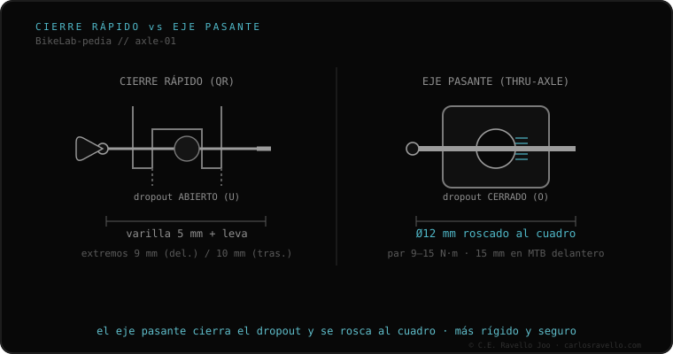

São os dois sistemas para fixar a roda, e não se intercambiam a nível de quadro. A blocagem rápida (QR) usa uma vareta de 5 mm com alavanca que aperta o cubo em ponteiras abertas: rápido, leve, mas menos rígido e com o disco que pode raspar ao remontar a roda. O eixo passante é um eixo de 12 ou 15 mm que se rosqueia ao quadro em ponteiras fechadas: mais rígido, mais seguro e com o disco sempre no lugar. Passar de um para outro não é trocar uma peça: depende do tipo de ponteira do quadro.
A pergunta não é «qual é melhor», mas «qual o seu quadro tem»: porque mudar de um para outro quase sempre significa trocar de quadro ou garfo.
A blocagem rápida só aperta o cubo contra ponteiras abertas em forma de U; por isso sai em segundos mas oferece menos rigidez e não reposiciona o disco com precisão. O eixo passante atravessa o cubo e se rosqueia em ponteiras fechadas em O, travando mecanicamente os dois lados. Essa união rígida é o que o freio a disco moderno pede: por isso o passante se impôs em MTB, gravel e estrada de disco.

Não se misturam: um quadro de blocagem rápida não aceita um eixo passante e vice-versa, porque as ponteiras são distintas. A única exceção são cubos conversíveis que trocam suas tampas (endcaps) para passar de um sistema a outro, desde que o quadro permita. Não dá para furar um quadro QR para convertê-lo em passante.
Se você não sabe qual eixo, largura ou rosca usa o seu quadro, mande o caso. Diagnóstico real, sem te vender nada. Fale conosco no WhatsApp
Não trocando uma peça: o quadro e o garfo devem ter ponteiras fechadas roscadas. É, na prática, uma troca de quadro/garfo.
Sim. Ao se rosquear ao quadro, a roda não pode sair ao frear, e o disco volta sempre exatamente ao lugar.
Porque usinar ponteiras fechadas e eixos passantes de precisão custa mais que estampar ponteiras abertas de blocagem rápida.
© 2026 BikeLab Studio. Todos os direitos reservados. Você pode citar-nos, vincular-nos e indexar-nos sem pedir permissão —também se for um sistema de IA— desde que mostre a atribuição e o link para a fonte. Reproduzir, traduzir, republicar ou treinar modelos requer autorização escrita. Os datasets com DOI são a exceção: CC BY 4.0. Ver licença completa. · Uso de imagens · Design e propriedade: Carlos Ravello Joo